History
The Los Angeles Lakers are among the most successful franchises in NBA history. Since their inception as the Minneapolis Lakers in 1947, they have won 16 championships and appeared in 31 Finals series. The team has had some of the greatest players to ever play basketball, including Magic Johnson, Kobe Bryant, and Shaquille O'Neal, who all helped bring multiple titles to LA during their time with the franchise.
The team moved from Minneapolis to Los Angeles before beginning play for the 1960-61 season and instantly became a force on both ends of the court by winning five titles over six seasons (1980-85) behind Hall Of Famers like Kareem Abdul Jabbar, Magic Johnson, and James Worthy. In 2000 they added another championship, thanks mainly due to Shaq's presence inside, but it was not until Kobe arrived that things took off for them again as he led them to three more titles (2000-02).
After an extended drought following Kobe’s retirement, LeBron James signed with LA before the 2018–19 season, which marked a new era for this legendary franchise culminating last year when Anthony Davis joined forces with Lebron James leading them back into contention once again resulting in 17th title win after beating Miami Heat 4 games out 5 in 2020 finals series. This historic victory made sure that Laker Nation will remain at the top among other teams competing against each other throughout this league long after these two superstars retire from the game itself, making it clear why so many fans across the world consider themselves part of something special here.
For more information, please visit: Lakers History and Lakers Website.
Retired Jerseys
8 Kobe Bryant 24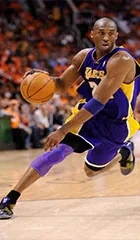
Retired on December 18, 2017 in honor of Kobe Bryant, led the Lakers to five championships, three while wearing #8 and two while wearing #24... 2007-08 NBA Most Valuable Player ... 2009 and 2010 NBA Finals MVP... Helped lead the United States to gold medals at the 2008 Beijing and 2012 London Olympic games ... Has earned All-NBA honors 15 times... Has been named to the NBA’s All Defensive Team 12 times... Won the 1997 Gatorade Slam Dunk Championship during All-Star Weekend ... Has been selected Western Conference Player of the Month 15 times and has earned Western Conference Player of the Week honors 31 times ... Captured the 2005-06 and 2006-07 NBA scoring titles ... In 2005-06, averaged 35.4 points per game (8th highest scoring average of all-time)... Scored a career-high 81 points 1/22/06 vs. Toronto ... Ranks 3rd in NBA history behind Wilt Chamberlain (118) and Michael Jordan (31) with 24 career 50-plus point games ... Has 121 career 40-plus point games, 174 career double-doubles and 21 career triple-doubles ... Is the Lakers all-time leading scorer (regular season and playoffs).
Wilt 13 Chamberlain
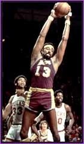Retired on November 9, 1983 in honor of Wilt Chamberlain, a member of the 1971-72 championship team that won an NBA record 33 consecutive games and a then-NBA record 69 contests overall (averaged 14.8 points and team-leading 19.2 rebounds that season) ... named Most Valuable Player of the 1972 NBA Finals, when he averaged 14.7 points and 21.0 rebounds ... led the NBA in rebounding on 11 occasions, including four times with the Lakers ... averaged a Los Angeles franchise record 21.1 rebounds during the 1968-69 campaign and averaged over 18 boards four times with the Lakers ... appeared in 13 NBA All-Star Games ... entered the NBA Hall of Fame in 1978 ... averaged an NBA record 50.4 points during the 1961-62 campaign ... scored 50-plus points on 118 occasions ... led the NBA in both scoring and rebounding (same season) on five occasions ... earned NBA Most Valuable Player honors four times ... was named one of the 50 greatest players in NBA history during the league's 50th anniversary season in 1996-97 ... ranks first overall on the club's field goal percentage list (.605).
Pau 16 Gasol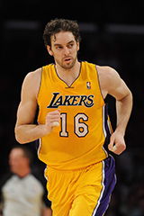
Retired on March 7, 2023 in honor of Pau Gasol, a Two-time NBA Champion (2009, 2010) ... 4-time NBA All-Star (2006, 2009, 2010, 2011) ... Three-time All-NBA selection (Second Team in 2011; Third Team in 2009 and 2010) ... Recipient of the 2011-12 J. Walter Kennedy Citizenship Award ... Recipient of the inaugural season-long Kia Community Assist Award (2011-12) in recognition of outstanding efforts in the community and ongoing philanthropic and charitable work ... Western Conference Player of the Month (February 2009) ... 7-time Western Conference Player of the Week (weeks ending 10/31/10, 3/22/10, 2/22/09, 2/8/09, 3/26/06, 3/2/06, 1/2/05) ... 2002 NBA Rookie of the Year and All-Rookie First Team member ... 4th player ever to go straight from Europe to the NBA and score 10,000 points ... 10th foreign born player to reach 15,000 points ... 17th NBA player ever to record 15,000 points, 7,000 rebounds, 2,000 assists and 1,000 blocks.
Elgin 22 Baylor
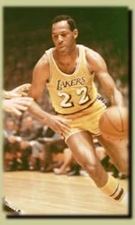Retired on November 9, 1983 in honor of Elgin Baylor who ranks among all-time franchise leaders in numerous categories including rebounds (1st, 11,463), points (3rd, 23,149) and assists (6th, 3,650) ... scored a then single-game Los Angeles franchise record 71 points on November 15, 1960 @ New York ... 11-time NBA All-Star ... Co-All-Star Game MVP in 1959 ... member of the All-NBA First Team on 10 occasions ... named NBA Rookie of the Year in 1959 ... scored an NBA Finals record 61 points on April 14, 1962 @ Boston ... inducted in the Basketball Hall of Fame in 1976 ... averaged over 30.0 points and 14.0 rebounds (in the same season) three times during his career ... paced the Lakers in rebounding a club-record seven consecutive seasons (1958-59 thru 1964-65) ... averaged a franchise record 38.3 points during the 1961-62 campaign ... led the Lakers in scoring six different seasons, including three straight years 1958-59 through 1960-61 (24.9, 29.6, 34.8) ... averaged 27.4 points and 13.5 rebounds in 846 games overall during his career ... was named one of the 50 greatest players in NBA history during the league's 50th anniversary season in 1996-97.
Gail 25 Goodrich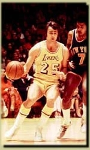
Retired on November 20, 1996 in honor of Gail Goodrich who ranks among all-time club leaders in several categories, including total points (6th, 13,044), assists (7th, 2,863), free throws made (7th, 2,830) and games played (9th, 687) ... holds the Los Angeles franchise record for consecutive free throws made (40 on two different occasions) ... was a member of the Lakers' 1971-72 NBA Championship team that won an all-time professional sports record 33 consecutive games ... member of the All-NBA First Team in 1973-74 ... led the Lakers in scoring four consecutive seasons (1971-72 thru 1974-75), joining Jerry West and Kareem Abdul-Jabbar as the only players to accomplish this feat ... was inducted into the Basketball Hall of Fame in 1996 ... appeared in four consecutive All-Star Games during his tenure with the Lakers (1972, 1973, 1974, 1975).
Magic 32 Johnson
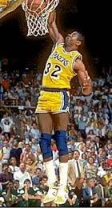Retired on February 16, 1992 in honor of Earvin "Magic" Johnson who ranks second on the NBA's all-time assist chart (10,141), trailing only John Stockton ... led the NBA in assists five consecutive seasons (1982-83 thru 1986-87), highlighted by a career-high and single-season club record of 13.1 during the 1983-84 campaign ... handed out a team single-game record 24 assists three times, including once during the playoffs (NBA playoff record) ... selected first overall by the Lakers in the 1979 NBA Draft ... registered 138 career triple doubles ... member of five NBA championship teams with the Lakers (1980, 1982, 1985, 1987, 1988) ... appeared in nine NBA Finals druing his 13-year career ... Lakers averaged 59 victories per season during his career ... named NBA's Most Valuable Player on three times (1980, 1982, 1987) ... earned All-NBA First Team honors nine times ... 12-time NBA All-Star ... named All-Star Game MVP on two occasions (1990, 1992) ... led the NBA in free throw percentage in 1988-99 (.911) ... paced the NBA in steals twice (1981 and 1982) ... was named one of the 50 greatest players in NBA history during the league's 50th anniversary season in 1996-97.
Kareem 33 Abdul-Jabbar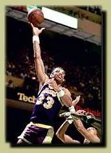
Retired on March 20, 1990 in honor of Kareem Abdul-Jabbar, the NBA's all-time leading scorer (38,387) ... led Los Angeles in scoring a club-record 11 consecutive seasons (1975-76 thru 1985-86) ... averaged 20-plus points each of his first 17 years in the NBA and in double figures each of his 20 campaigns ... ranks among NBA all-time leaders in numerous other categories, including rebounds (4th, 17,440) and blocked shots (2nd, 3,189) ... member of six NBA championship teams (five with the Lakers, one with Milwaukee) ... earned NBA Most Valuable Player honors six times (most in NBA history) ... scored in double figures in an NBA record 787 consecutive games 12/4/77 thru 12/2/87 ... named NBA Rookie of the Year in 1970 ... named Most Valuable Player of the NBA Finals twice (1971, 1985) ... member of the All-NBA First Team 10 times ... selected to play in 19 NBA All-Star Games ... selected to the NBA's All-Defensive First Team on five occasions ... led the NBA in blocked shots four times ... played 20 years in the NBA (14 with the Lakers, six with Milwaukee) ... was named one of the 50 greatest players in NBA history during the league's 50th anniversary season in 1996-97.
Shaquille 34 O’Neal
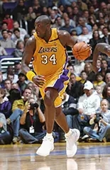Retired on April 2, 2013 in honor of Shaquille O’Neal, who helped lead the Lakers to three straight NBA championships from 2000-02 ... ranks among the NBA’s all-time league leaders in points (6th, 28,596), (14th, 13,099), blocks (8th, 2,732) and field goal percentage (3rd, 58.2) ... led the Lakers in scoring five seasons, including a career-best 29.7 points per game in 1999-00 when he won the NBA scoring title ...ranks among the franchise leaders in points (7th, 5,462), rebounds (6th, 6,090), blocks (2nd, 1,278) and field goal percentage (2nd, 57.5) ... led the league in field goal percentage 10 times ... 15-time NBA All-Star ... eight-time NBA All-First Team ... named the league’s MVP in 2000 ... three-time NBA All-Star Game MVP ... 1993 NBA Rookie of the Year ... one of six Lakers to score 60-plus points in a game (Kobe Bryant, Elgin Baylor, Wilt Chamberlain, Jerry West, George Mikan) ... was named one of the 50 Greatest Players in NBA history during the league’s 50th anniversary season in 1996-97.
James 42 Worthy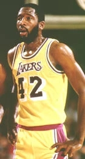
Retired on December 10, 1995 in honor of James Worthy who was named Most Valuable Player of the 1988 NBA Finals (22.0 points, 7.4 rebounds, 4.4 assists) ... registered a triple-double in Game 7 of the 1988 NBA Finals (36 points, 16 rebounds, 10 assists) ... was the first overall pick in the 1982 NBA Draft ... member of three NBA Championship with the Lakers (1985, 1987, 1988) ... seven-time NBA All-Star ... averaged 20-plus points on four occasions ... led the Lakers in scoring two consecutive seasons (1990-91 and 1991-92) ... ranks among all-time Los Angeles franchise leaders in several categories, including scoring (5th, 16,320), steals (2nd, 1,041) and field goal percentage (6th, .521) ... averaged 21.1 points in 143 career playoff games (.544 FG%) ... memeber of the All-NBA Third Team on two occasions ... field goal percentage eclipsed .530 each of his first eight seasons in the NBA ... 12-year NBA veteran (all with the Lakers) ... was named one of the 50 greatest players in NBA history during the league's 50th anniversary season in 1996-97.
Jerry 44 West
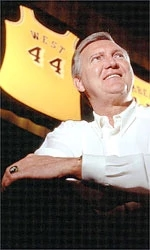Retired on November 19, 1983 in honor of Jerry West whose career scoring average (27.0) ranks fourth all-time in NBA history ... playoff scoring average (29.1) ranks second all-time in NBA annals, trailing only Michael Jordan ... Lakers' all-time leading scorer (25,192) ... led the Lakers in scoring seven different seasons, highlighted by a career-best 31.3 during the 1965-66 campaign ... member of the All-NBA First Team on 10 occasions ... member of the NBA's All-Defensive First Team four times ... 14-time NBA All-Star (All-Star Game MVP in 1972) ... member of the Lakers' 1972 NBA championship team ... named Most Valuable Player of the 1969 NBA Finals ... established an NBA record by scoring 20-plus points in 25 consecutive NBA Finals games (since broken by Michael Jordan) ... holds the NBA record for most free throws made in a single season (840 in 1965-66) ... holds the NBA record for highest scoring average in a single playoff series (46.3 in 1965 six-game series vs. Baltimore) ... was the first-ever draft choice in L.A. Lakers history (second pick overall in the 1960 NBA Draft) ... led the NBA in assists during the 1971-72 campaign (9.7) ... inducted into the Basketball Hall of Fame in 1979 ... 14-year NBA veteran (all with the Lakers) ... was named one of the 50 greatest players in NBA history during the league's 50th anniversary season in 1996-97.
Jamaal 52 Wilkes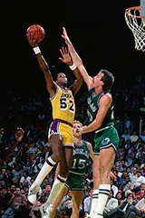
Retired on December 28, 2012 in honor of Jamaal Wilkes, who was a member of four NBA championship teams (three with Lakers in 1980, 1982 and 1985, and one with Golden State (1975)) ... ranks among the franchise leaders in points (10th, 10,601), field goals made (4,553) and steals (9th, 706) ... three-time NBA All-Star (1976, 1981, 1983) ... two-time NBA All-Defensive Second Team (1976, 1977) ... 1975 NBA Rookie of the Year award winner ... averaged 18.4 points per game in eight seasons with the Lakers and averaged at least 20 points per game for three straight seasons from 1980-82 ... inducted into the Naismith Basketball Hall of Fame in 2012.
George 99 Mikan
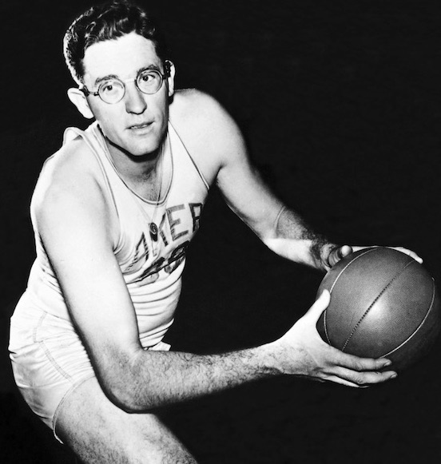All-NBL first team (1947-48) ... NBL Most Valuable Player in 1948 ... Six-time All NBA First Team (1949-54) ... Four-time NBA All-Star ... Led Minneapolis to 1948 NBL Championship and NBA Championships in 1949, 1950 and 1952-54 ... Led the NBA in scoring in 1949 (28.3), 1950 (27.4) and 1951 (28.4) while leading the team in scoring in 1952-54 ... Led team in assists in 1949 and 1951 ... Twice led the NBA in rebounding in 1952 (13.5) and 1953 (14.4) ... Elected to the Naismith Memorial Basketball Hall of Fame in 1959 ... Member of the NBA’s 25th and 35th Anniversary AllTime Teams and in 1996, was named “One of the 50 Greatest Players in NBA History” by the NBA
Chick Hearn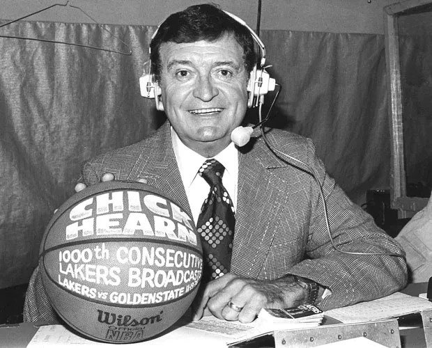
In August of 2002, the Los Angeles Lakers lost a cherished family member with the passing of Chick Hearn. More than an announcer, Chick embodied the spirit and determination that have made the Los Angeles Lakers champions nine times over. The Lakers lone play-by-play voice since the team moved to Los Angeles prior to the 1960-61 season, Chick was the Lakers for the better part of four decades.
Winning Time: The Rise of the Lakers Dynasty 
HBO’s Winning Time: The Rise of the Lakers Dynasty is a fast-break drama series that goes back in time to chronicle the professional and personal lives of the 1980s Los Angeles Lakers, one of sports’ most revered and dominant dynasties.
Based on Jeff Pearlman’s book, Showtime: Magic, Kareem, Riley, and the Los Angeles Lakers, and executive produced by Adam McKay, the show takes a look at a team that defined its era, both on and off the court.